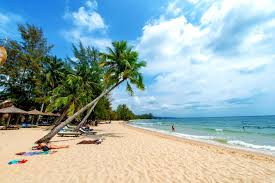

Summer Actvities! You can all get excited now!!!
 Summer everyones favorite season. What a cliche though. I mean its cool and all especially if you have vacations or something planned but other than that it is mostly hot weather that you don't even want to be in all day. Eiher way there are some fun activities in the summer. I guess. Some of these activites are spikeball. I am alright. Gotta stay humble you know. It's actually a pretty fun game whether you are playing it in the sand or grass. It is always a good time with your friends. Another activity that is very popular during the summer time is going on vacations. Many people either don't have work or arn't in school so they have free time to explore the world. An activity that I enjoy in the summer not only because it is tranquill and kind of a workout is hiking. Helena is a gerat place for this you there are tons of trails to go on. If you try to beat the heat like me in the summer you might want to find a body of water to cool off in. The closest body of water in Helena I know for recreational activities is Canyon Ferry Lake. It is actually huge and offers endless activites. You can throw rocks, kayak, cliff jump, fish, or just float and drink. Lastly if you want to spend your summer like me and have tons of fun. You can get a job you lazy couch potato. Jobs provide so much fun. The options for working are awesome wither you toil outside in the heat or, you get the pleasure of dealing with stupid annoying customers enjoying their summer. Doesn't this all sound like a blast to you!